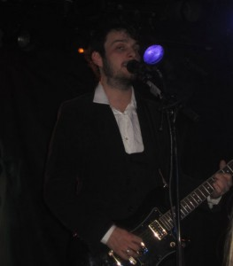
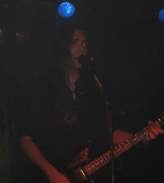

Por fin llegó la fecha de uno de los conciertos más esperados tras la confirmación de las fechas en nuestro país: íbamos a poder ver a Alcest, Les Discrets y Soror Dolorosa en un mismo escenario. El esfuerzo de los promotores es de agradecer, ya que por desgracia cada vez son menos los grupos que se atreven a incluir una fecha de la Península en sus giras; por otro lado, la aceptación de este estilo ha ido cada vez más en auge y la respuesta de los asistentes estuvo a la altura de las expectativas. Así pues, allí estuvimos una vez más.
Soror Dolorosa fueron los encargados de dar pie al espectáculo. Su estilo más orientado al post-punk y el gothic rock rompió los esquemas de los asistentes, generando a la vez una gran aceptación a medida que la actuación fue avanzando. El conjunto nos deleitó con un saturado y crudo sonido a la vez que Andy Julia, con un cierto aire a Mario Vaquerizo, ejerció su papel de frontman con un correcto registro vocal y una entregada actitud sobre el escenario. Tocaron temas como 43º, Crystal Lane, Low End o la melancólica Autumn Wounds, predominando su último trabajo Blind Scenes. Sin duda una propuesta refrescante para aquellos amantes de sonidos como los de Fields of the Nephilim o Bauhaus, pues actualmente pocas bandas consiguen ejecutar un estilo al que poco nuevo se le puede aportar sin acabar sonando demasiado a refrito.
Con un aforo ya algo más concurrido, llegó el turno de Les Discrets. La banda, bebiendo directamente del estilo de los cabezas de cartel, ha conseguido distinguirse y adueñarse de un sonido propio gracias a un estilo algo más austero y una clara influencia folk en sus composiciones. Tras unos minutos de espera, pudimos empezar a vislumbrar la formación en el escenario: en esta ocasión Neige se encargaría del bajo, y tanto el frontman Fursy Teysser como Zero (guitarra) lucirían un “elegante” look (camisa blanca con americana y chalequito), acorde con la esencia del grupo. El público se encontraba ya ansioso hasta que por fin empezaron a sonar las primeras notas de l’Échappée, un tema más que indicado para empezar el repertorio. Durante el primer minuto se pudo distinguir alguna que otra pifia en la parte vocal y la batería, pero lo peor estuvo por llegar: contínuos fallos en micrófono y amplificadores sumado a exageradas oscilaciones en los niveles de guitarra desembocaron en un resultado algo nefasto. En una primera ojeada técnica parecían haber dado con el problema, pero el segundo tema Les Feuilles de l’Olivier resultó incluso peor ejecutado que el antecesor. La frustración del conjunto era evidente, sobretodo en el caso de Teysser, que con los nervios a flor de piel se disculpó múltiples veces y atribuyó la raíz del problema técnico al mismo grupo. Tras unos largos minutos de espera con música de fondo y unos cuantos cambios en el cableado, el problema pareció haberse solucionado y dieron pie a La Traversée, uno de los temas más destacables de su último trabajo Ariettes Oubliées… que, por suerte, transcurrió ya de manera notable y consiguió volver a ponernos a todos en situación con la intensa atmósfera que creó el pasaje instrumental que acaba concluyendo el tema. Cabe decir de la voz limpia secundaria “femenina” a cargo de Zero bien pudo parecer grotesca a ojos de cualquiera (es corpulento y más alto que una torre), sin embargo llevó a cabo su papel con un sorprendente buen resultado. Siguieron Le Movement Perpétuel y La Nuit Muerte con una sonorización más o menos decente, hasta que finalmente el frontman dio a elegir al público si terminar la velada con Song of Mountains o con un tema de la ya disuelta banda Amesoeurs, Gas in Veins, ya que perdieron mucho tiempo solucionando los problemas de audio y solo restaba tiempo para un solo tema. La mayoría de la audiencia (servidora incluída) aclamó Gas in Veins, y esa fue la escogida: no es de los mejores temas de su debut, pero dada la imposibilidad de asistir en nuestros días a un concierto de éstos últimos sirvió al menos para concluir el setlist con algo de mejor sabor de boca. Acabada la actuación, Teysser se disculpó nuevamente por el desastre y agradeció la paciencia y el cálido trato recibido por los asistentes. Por nuestra parte, el pesar de no haber podido disfrutar en plenitud de Les Discrets fue un sentimiento mútuo: esperemos que haya oportunidad de verlos decentemente en otra ocasión.

Finalmente llegó el turno del esperado plato fuerte. La tensión era notable entre los asistentes tras el despropósito anterior, además, el sofocante calor acumulado en la sala y el gentío que acabó viniendo no ayudaron a hacer la espera más amena. La música de fondo por fin cesó y vimos aparecer a prácticamente la misma formación de antes, tanto Neige como Zero cambiaron entonces sus vestimentas para lucir unas algo más humildes. Neige, en su mejorado rol de frontman, introdujo al grupo para así dar pie con la cautivadora Autre Temps, seguida de Là où Naissent les Couleurs Nouvelles, ambos temas de su último trabajo; sin embargo, el sonido estaba poco definido y transcurrieron con poca calidez. Este problema se solventó con Les Iris, uno de los mejores temas de Souvenirs d’un Autre Monde, que con algo más de experiencia sobre el escenario consiguió cautivar el ambiente. Por otro lado, encontramos un Winterhalter rabioso, que con un bombo y una caja algo subidos de volumen dejó en un segundo plano el resto de instrumentos, algo de lo que desgraciadamente ya fuimos testigos en su anterior ocasión en Madrid (Madrid is The Dark Fest, 2010). Siguieron con el emotivo tema homónimo a su último disco, Les Voyages de L’Âme, seguido de la primera parte de Écailles de Lune y Ciel Errant, siendo la primera ocasión que la incluían en el setlist de una gira, con un gratificante resultado. Seguidamente resultó inesperada la brutal Printemps Emeraude, con seguridad uno de los mejores inicios que pueda tener nunca un álbum; tras él, el registro limpio de Neige consiguió erizarnos la piel a todos pese a un sonido algo caótico y estruendoso. Perceés de Lumiére fue posteriormente la encargada de hacernos ser testigo del registro gutural del cantante en todo su esplendor: absolutamente crudo y desgarrador. Concluído el último tema, el conjunto se despidió con una evidente intención de volver al escenario tras la llamada del público. Los partidarios del primer disco estuvimos de suerte, ya que tras la pausa también cayó Souvenirs d’un Autre Monde. Finalmente, la velada concluyó con Summer’s Glory, tema que concluye su último trabajo.
{kind=link}

Definitivamente Alcest no es un grupo que se pueda disfrutar tanto en un escenario como en estudio: si quieren optar por el tema de las giras deben mejorar su puesta en directo, en el sentido de definir algo más su sonido. Hay que decir que en esta ocasión encontramos un Neige algo menos frío que de costumbre, interactuando con el público en inglés, introducienco los temas y dejando ir alguna que otra sonrisa: viendo este cambio, parece que por fin se siente cómodo sobre el escenario. En cuanto al aforo, pese a acabar en algo similar a una sauna, pudimos disfrutar de un predominante silencio entre canción y canción por parte de los espectadores, quizá eclipsados por la actuación, que no es sino de agradecer dado que es poco usual y ayudó a crear el ambiente necesario para poder adentrarse del todo en una actuación como tal. Todos estos factores más, en mi opinión, un acertadísimo setlist, ayudaron a disfrutar de un muy buen concierto, aún lejos de ser ideal.
{kind=link}
*Fotos cedidas por: Noemí Vega
Apoyános